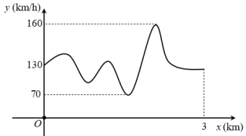
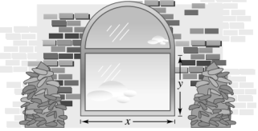
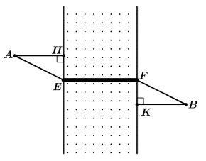
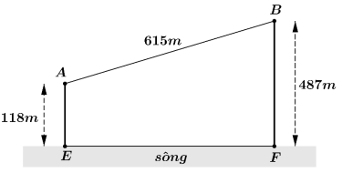
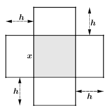

Thời gian làm bài: 90 phút
Lời giải Ta có: $\Rightarrow {x}'\left( p \right)=-\frac{25000}{{{p}^{2}}}\lt 0$x\left( p \right)=\frac{25000}{p}-100$, với mọi $p\in \left( 0;250 \right)$. Do đó hàm số luôn nghịch biến trên khoảng $\left( 0;250 \right)$. Vậy số lượng sản phẩm bán ra luôn giảm khi giá bán tăng.

Lời giải Dựa vào đồ thị ta thấy tốc độ nhỏ nhất bằng $70$(km/h).
Lời giải Thể tích của thùng $V=30\,\text{d}{{\text{m}}^{\text{3}}}$. Theo đề bài do $x\,$($x\gt 0$, đơn vị $\text{dm}$) là cạnh đáy của thùng (hình vuông) nên chiều cao của thùng là: $h=\frac{V}{{{x}^{2}}}=\frac{30}{{{x}^{2}}}$. Giá nguyên vật liệu làm đáy và nắp thùng là $1\text{ }200$ đồng$/1\text{d}{{\text{m}}^{2}}$, giá nguyên vật liệu làm mặt xung quanh của thùng là $1\text{ }000$ đồng$/1\,\text{d}{{\text{m}}^{2}}$. Diện tích mặt đáy, nắp thùng và diện tích xung quanh lần lượt là: ${{x}^{2}};\,{{x}^{2}};4xh$. Chi phí làm một thùng đựng dầu là: $f\left( x \right)=2.1,2.{{x}^{2}}+1.4xh=2,4{{x}^{2}}+\frac{120}{x}=\frac{12}{5}{{x}^{2}}+\frac{120}{x}$ (đơn vị nghìn).
Lời giải Hàm chi phí biên tương ứng là: ${C}'\left( x \right)=100-3x+0,075{{x}^{2}}$.
Lời giải Tốc độ tăng trưởng của quần thể nấm $X$ tại thời điểm $t$ là: ${P}'\left( t \right)=120.0,15.{{\text{e}}^{0,15t}}=18{{\text{e}}^{0,15t}}$. Do đó, tốc độ tăng trưởng của quần thể nấm $X$ tại thời điểm $t=0$ là ${P}'\left( 0 \right)=18$ tế bào/giờ.
Lời giải Tập xác định: $D=\left( 0;50 \right]$. Đạo hàm ${N}'\left( t \right)=1,2{{e}^{0,012t}}=2\Rightarrow t=\frac{\ln \left( \frac{2}{1,2} \right)}{0,012}\approx 42,57$ Vào năm 2066 thì tốc độ gia tăng dân số hơn 2 triệu người/ năm.
Lời giải Ta có khi có $x$ sản phẩm được bán ra thì giá bán là $p\left( x \right)=1000-25x$, do đó doanh thu của cửu hàng khi bán ra $x$ sản phẩm là $f\left( x \right)=x.p\left( x \right)=1000x-25{{x}^{2}}$.
Lời giải Đạo hàm ${p}'\left( x \right)=\frac{-3,54}{{{\left( 1+0,01x \right)}^{2}}}\lt 0$ nên hàm số $p$ nghịch biến. Do đó, nếu giá bán tăng thì số lượng đơn vị sản phẩm bán được giảm đi.
Lời giải Gọi $f\left( x \right),x\in {{\mathbb{N}}^{*}}\,$là lợi nhuận mà lái xe có thể thu về khi chở $x$ người trong chuyến xe đó. Ta có $f\left( x \right)=x.\frac{{{\left( 40-x \right)}^{2}}}{2}$ (nghìn đồng) với $1\le x\le 16$. Tính trực tiếp $f\left( 13 \right)=4738,5$ (nghìn); $f\left( 14 \right)=4732$ (nghìn); $f\left( 15 \right)=4687,5$ (nghìn) $f\left( 16 \right)=4608$ (nghìn). Vậy lái xe chở $13$ người để thu được nhiều tiền nhất.
Lời giải Ta có: $S\left( x \right)=\pi {{x}^{2}}+\frac{20000}{x}$ Đạo hàm ${S}'\left( x \right)=2\pi x-\frac{20000}{{{x}^{2}}}=\frac{2\pi {{x}^{3}}-20000}{{{x}^{2}}}$. Giải phương trình ${S}'\left( x \right)=0\Leftrightarrow 2\pi {{x}^{3}}-20000=0\Leftrightarrow {{x}^{3}}=\frac{10000}{\pi }\Leftrightarrow x=10.\sqrt[3]{\frac{10}{\pi }}$ Bảng biến thiên: Ta thấy diện tích toàn phần chiếc xô nhỏ nhất khi bán kính đáy xô là $x=10\sqrt[3]{\frac{10}{\pi }}\approx 14,7(\text{cm)}$.
Lời giải Theo ý nghĩa cơ học của đạo hàm, vận tốc của vật sau $t$ giây là $v\left( t \right)={h}'\left( t \right)=32,5-9,8t$(m/s). Do đó, vận tốc của vật sau 3 giây là $v\left( 3 \right)=32,5-9,8.3=3,1$ (m/s).
Lời giải Tập xác định: $D=\left( 0;120 \right]$. Sự biến thiên: Đạo hàm ${C}'\left( v \right)=-\frac{5400}{{{v}^{2}}}+\frac{3}{2}=\frac{3\left( v-60 \right)\left( v+60 \right)}{2{{v}^{2}}};{C}'\left( v \right)=0\Leftrightarrow v=-60$ (loại) hoặc $v=60$. Trên khoảng $\left( 0;60 \right),{C}'\left( v \right)\lt 0$ nên hàm số nghịch biến trên khoảng này. Trên khoảng $\left( 60;120 \right),{C}'\left( v \right)\gt 0$ nên hàm số đồng biến trên khoảng này. Cực trị: Hàm số đạt cực tiểu tại $v=60,{{C}_{CT}}=C\left( 60 \right)=180$. Như vậy để tiết kiệm tiền xăng nhất, tài xế nên chạy xe với tốc độ trung bình là $60$(km/h).

Lời giải: Lời giảiĐúng: Bán kính của hình bán nguyệt là $\frac{x}{2}$ nên nửa chu vi bán nguyệt là $\frac{\pi x}{2}$Đúng: Ta có $2\left( x+y \right)+\frac{\pi x}{2}=8\Leftrightarrow y=4-\frac{x\left( 4+\pi \right)}{4}$.Sai: Diện tích của cửa sổ:$S=xy+\frac{1}{2}\pi {{\left( \frac{x}{2} \right)}^{2}}=x\left( 4-x-\frac{\pi x}{4} \right)+\frac{\pi {{x}^{2}}}{8}=4x-{{x}^{2}}-\frac{\pi {{x}^{2}}}{8}$.Đúng: $S$ đạt giá trị lớn nhất khi $x=\frac{4}{2+\frac{\pi }{4}}=\frac{16}{8+\pi }$ nên $y=4-x-\frac{\pi x}{4}=\frac{16}{8+\pi }$.
Lời giải: Lời giảiĐúng: Chi phí mỗi ngày là tổng các chi phí nên $C\left( x \right)=0,0005{{x}^{2}}+0,15x+5$ (triệu đồng).Sai: Khi $x=100$, ta có $C\left( 100 \right)=0,0005\times {{100}^{2}}+0,15\times 100+5=25$.Sai: Chi phí trung bình trên mỗi khối sản phẩm là: $\overline{c}\left( x \right)=\frac{0,0005{{x}^{2}}+0,15x+5}{x}=0,0005x+0,15+\frac{5}{x}$.Đúng: Xét hàm số $\overline{c}\left( x \right)=0,0005x+0,15+\frac{5}{x}$, $0\lt x\le 200$. Ta có ${{\overline{c}}^{\,\prime }}\left( x \right)=\frac{5}{{{10}^{4}}}-\frac{5}{{{x}^{2}}}$, ${{\overline{c}}^{\prime }}\left( x \right)=0\Leftrightarrow {{x}^{2}}={{10}^{4}}\Rightarrow x=100$ (do $x\in \left( 0;200 \right]$ Bảng biến thiên: Vậy chi phí trung bình giảm khi hàm số $\overline{c}\left( x \right)$nghịch biến, tức là $x\in \left( 0;100 \right)$.
Lời giải: Lời giảiSai: Nếu $y$ là hàm số biểu thị cho chuyển động của hạt thì ${y}'$ là hàm vận tốc $v$.Đúng: Ta có $y={{t}^{3}}-12t+3\Rightarrow {y}'=v=3{{t}^{2}}-12$Sai: Dựa vào hàm vận tốc $v\left( t \right)=3{{t}^{2}}-12$ thì hạt đi lên khi $v\gt 0$ và xuống khi $v\lt 0$. Do đó, vật đi lên khi $t\in \left( 2;+\infty \right)$ và đi xuống khi $t\in \left( 0;2 \right)$. Vậy tại thời điểm $t=1$ thì hạt đang chuyển động đi xuống.Đúng: Từ $t=0$ tới $t=2$, vật chuyển động từ tọa độ $y=3$ đến tọa độ $y=-13$, tức là vật đi được quãng đường $16$ đơn vị độ dài. Từ $t=2$ tới $t=3$, vật chuyển động từ tọa độ $y=-13$ đến tọa độ $y=-6$, tức là vật đi được quảng đường $7$ đơn vị độ dài. Kết luận quãng đường vật di chuyển trong khoảng thời gian $0\le t\le 3$ là $23$ đơn vị độ dài.
Lời giải: Lời giảiĐúng: Chi phí để $A$ sản xuất $10$ tấn sản phẩm trong một tháng là $C\left( 10 \right)=100+30.10=400$triệu đồng.Sai: Số tiền $A$ thu được khi bán $10$ tấn sản phẩm cho $B$ là $R\left( 10 \right)=10.P\left( 10 \right)=10.\left( 45-0,{{001.10}^{2}} \right)=449$ triệu đồng.Đúng: Lợi nhuận mà $A$ thu được là: $H\left( x \right)=R\left( x \right)-C\left( x \right)=xP\left( x \right)-C\left( x \right)$ $P\left( x \right)=45x-0,001{{x}^{3}}-\left( 100+30x \right)=-0,001{{x}^{3}}+15x-100$Đúng: Xét hàm số $H\left( x \right)=-0,001{{x}^{3}}+15x-100$, $\left( 0\le x\le 100 \right)$ Ta có: ${H}'\left( x \right)=-0,003{{x}^{2}}+15=0\Leftrightarrow -0,003{{x}^{2}}+15=0\Leftrightarrow x=50\sqrt{2}$ (chọn). Khi đó: $H\left( 0 \right)=-100$; $H\left( 50\sqrt{2} \right)=500\sqrt{2}-100$; $H\left( 100 \right)=400$. Vậy $A$ bán cho $B$ khoảng $50\sqrt{2}\approx 70,7$ tấn sản phẩm mỗi tháng thì thu được lợi nhuận lớn nhất bằng $H\left( 50\sqrt{2} \right)=500\sqrt{2}-100$.
Lời giải: Lời giải Số tiền thu về khi bán $x$ mét vải lụa là: $220x$. Lợi nhuận thu được khi bán $x$ mét vải lụa là: $L\left( x \right)=220x-\left( {{x}^{3}}-3{{x}^{2}}-20x+500 \right)=-{{x}^{3}}+3{{x}^{2}}+240x-500$ Xét hàm số $L\left( x \right)=-{{x}^{3}}+3{{x}^{2}}+240x-500$ với $x\in \left[ 1;18 \right]$ $${L}'\left( x \right)&=-3{{x}^{2}}+6x+240&=0\Leftrightarrow \left[ \begin{aligned} x&=10\in [1;18]\\ x&=-8\notin [1;18]\\ \end{aligned} \right.$ Bảng biến thiên: Vậy hộ làm nghề dệt này thu được lợi nhuận tối đa trong một ngày là $1200$ nghìn đồng khi sản xuất $10$ mét vải lụa trong một ngày.

Lời giải: Lời giải Đặt $HE={{x}_{{}}}{{,}_{{}}}FK=y$, với $x,\,y\gt 0$ Ta có: $HE+KF=20\Rightarrow x+y=20$, $\left\{ \begin{aligned} AE&=\sqrt{16+{{x}^{2}}}\\ BF&=\sqrt{36+{{y}^{2}}}&=\sqrt{36+{{\left( 20-x \right)}^{2}}}\\ \end{aligned} \right.$ Nhận xét: Vì $EF$ không đổi nên $AB$ ngắn nhất khi $AE+BF$ nhỏ nhất. Ta có $=\sqrt{{{x}^{2}}+16}+\sqrt{{{\left( 20-x \right)}^{2}}+36}=\sqrt{{{x}^{2}}+16}+\sqrt{{{x}^{2}}-40x+436}=f\left( x \right)$$AE+BF$ Đạo hàm $$${f}'\left( x \right)=\frac{x}{\sqrt{{{x}^{2}}+16}}+\frac{x-20}{\sqrt{{{x}^{2}}-40x+436}}=0\Rightarrow x=8,\,\forall x\in \left( 0;20 \right)$ Bảng biến thiên Vậy $AE=\sqrt{{{8}^{2}}+16}\approx 8,94$km
Lời giải: Lời giải Khi bơi ngược dòng vận tốc của cá là $v-5$(km/h). Thời gian để cá vượt khoảng cách $100$km là $t=\frac{100}{v-5}\,\left( v\gt 5 \right)$. Năng lượng tiêu hao của cá khi vượt khoảng cách $100$km là $E\left( v \right)=c.{{v}^{3}}.\frac{100}{v-5}=100c.\frac{{{v}^{3}}}{v-5}$ Xét hàm số $y=E\left( v \right)$ ta có ${E}'\left( v \right)=100c.\frac{3{{v}^{2}}\left( v-5 \right)-{{v}^{3}}}{{{\left( v-5 \right)}^{2}}}=100c.\frac{{{v}^{2}}\left( 2v-15 \right)}{{{\left( v-5 \right)}^{2}}}$ Giải phương trình ${E}'\left( v \right)=0\Leftrightarrow v=7,5$(do $v\gt 5$). Ta có bảng biến thiên Vậy vận tốc bơi của cá khi nước đứng yên thuộc khoảng $\left( 5\,;\,7,5 \right)$ thì năng lượng tiêu hao của cá giảm. Khi đó giá trị lớn nhất của $b-a$ là 2,5.

Lời giải: Lời giải Giả sử người đó đi từ $A$ đến $M$ để lấy nước và đi từ $M$ về $B$ Dễ dàng tính được $BD=369,EF=492$. Ta đặt $EM=x$, khi đó ta được: $MF=492-x;\,AM=\sqrt{{{x}^{2}}+{{118}^{2}}}\,;\,BM=\sqrt{{{\left( 492-x \right)}^{2}}+{{487}^{2}}}\text{.}$ Như vậy ta có hàm số $f\left( x \right)$ được xác định bằng tổng quãng đường $AM$ và $MB$: Xét hàm $f\left( x \right)=\sqrt{{{x}^{2}}+{{118}^{2}}}+\sqrt{{{\left( 492-x \right)}^{2}}+{{487}^{2}}}\text{ }\!\!~\!\!\text{ }$ với$x\in \left[ 0;492 \right]$ Ta cần tìm giá trị nhỏ nhất của $f\left( x \right)$ để có được quãng đường ngắn nhất và từ đó xác định được vị trí điểm $M$. Đạo hàm: ${f}'\left( x \right)=\frac{x}{\sqrt{{{x}^{2}}+{{118}^{2}}}}-\frac{492-x}{\sqrt{{{\left( 492-x \right)}^{2}}+{{487}^{2}}}}\text{=0}$ $\Leftrightarrow \frac{x}{\sqrt{{{x}^{2}}+{{118}^{2}}}}=\frac{492-x}{\sqrt{{{\left( 492-x \right)}^{2}}+{{487}^{2}}}}\Leftrightarrow x\sqrt{{{\left( 492-x \right)}^{2}}+{{487}^{2}}}=\left( 492-x \right)\sqrt{{{x}^{2}}+{{118}^{2}}}$ $\Leftrightarrow \left\{ \begin{matrix} {{x}^{2}}\left[ {{\left( 492-x \right)}^{2}}+{{487}^{2}} \right]={{\left( 492-x \right)}^{2}}\left( {{x}^{2}}+{{118}^{2}} \right)\\ 0\le x\le 492\\\end{matrix}\Leftrightarrow \left\{ \begin{matrix} {{\left( 487x \right)}^{2}}={{\left( 58056-118x \right)}^{2}}\\ 0\le x\le 492\\\end{matrix} \right. \right.$ $\Leftrightarrow \left\{ \begin{matrix} x=\frac{58056}{605}\text{ }\!\!~\!\!\text{ hay }\!\!~\!\!\text{ }x=-\frac{58056}{369}\Leftrightarrow x=\frac{58056}{605}\\ 0\le x\le 492\\\end{matrix} \right.$ Hàm số $f\left( x \right)$ liên tục trên đoạn $\left[ 0;492 \right]$. So sánh các giá trị của $f\left( 0 \right)\,;\,f\left( \frac{58056}{605} \right)\,;\,f\left( 492 \right)$ ta có giá trị nhỏ nhất $f\left( \frac{58056}{605} \right)\approx 779,8\text{ }\!\!~\!\!\text{ m}$ Khi đó quãng đường đi ngắn nhất là xấp xỉ $779,8\text{ }\!\!~\!\!\text{ }\approx \text{780m}$.
Lời giải: Lời giải Ta có ${f}'\left( t \right)=500\left( 2t-m{{e}^{-t}} \right)$ và ${{f}'}'\left( t \right)=500\left( 2+m{{e}^{-t}} \right)$ Tốc độ bán hàng luôn tăng trong khoảng thời gian 10 năm đầu phát hành sản phẩm.$\Leftrightarrow {f}'\left( t \right)$. là hàm số đồng biến trên $\left[ 0\,;\,10 \right]$ $\Leftrightarrow {{f}'}'\left( t \right)\ge 0$, $500\left( 2+m{{e}^{-t}} \right)\ge 0\,,\,\,\forall t\in \left[ 0\,;\,10 \right]$$\Leftrightarrow $\forall t\in \left[ 0\,;\,10 \right]$ $\Leftrightarrow m\ge -2{{e}^{t}}\,,\,\,\forall t\in \left[ 0\,;\,10 \right]$$m{{e}^{-t}}\ge -2\,,\,\,\forall t\in \left[ 0\,;\,10 \right]$$\Leftrightarrow $$2+m{{e}^{-t}}\ge 0\,,\,\,\forall t\in \left[ 0\,;\,10 \right]$$\Leftrightarrow $ $\Leftrightarrow m\ge -2{{e}^{0}}=-2$ (do hàm số $y=-2{{e}^{t}}$ nghịch biến trên $\left[ 0\,;\,10 \right]$). Vậy giá trị nhỏ nhất của $m$ là $-2$.

Lời giải: Lời giải Thể tích khối hộp $V=x.x.h={{x}^{2}}h=4000\Rightarrow h=\frac{4000}{{{x}^{2}}}.$ Để chiếc hộp làm ra ít tốn bìa các tông nhất khi và chỉ khi diện tích toàn phần của hộp là nhỏ nhất. Diện tích toàn phần của hộp (không nắp) ${{S}_{\text{tp}}}={{S}_{\text{day}}}+{{S}_{\text{xung quanh}}}=x.x+4.hx={{x}^{2}}+4hx$ $={{x}^{2}}+4x.\frac{4000}{{{x}^{2}}}={{x}^{2}}+\frac{16000}{x}$ Xét hàm $f\left( x \right)={{x}^{2}}+\frac{16000}{x}$ với $x\gt 0$ có ${f}'\left( x \right)=2x-\frac{16000}{{{x}^{2}}}=0\Leftrightarrow 2x-\frac{16000}{{{x}^{2}}}=0\Leftrightarrow x=20$ Bảng biến thiên: Vậy độ dài cạnh hình vuông $x=20$cm thì chiếc hộp làm ra tốn ít bìa các tông nhất.
Vui lòng kéo lên trên để xem chi tiết lời giải từng câu hỏi.